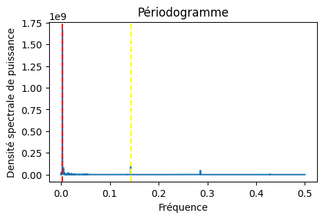
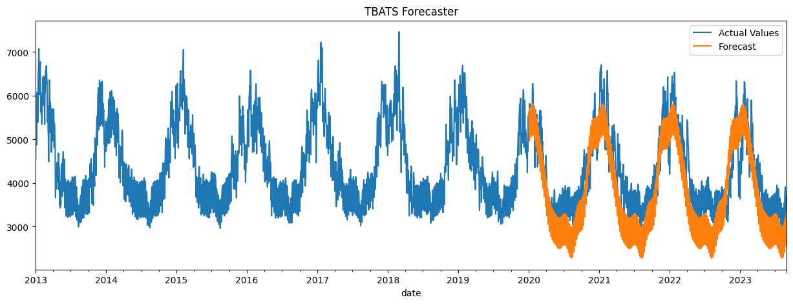

from scipy import signal
frequencies, power_spectral_density = signal.periodogram(df_con_daily['consommation'].values)
# Tracé du périodogramme
plt.figure(figsize=(5, 3))
plt.plot(frequencies, power_spectral_density)
plt.title('Périodogramme')
plt.xlabel('Fréquence')
plt.ylabel('Densité spectrale de puissance')
# Ajout de la ligne verticale à 1/12
plt.axvline(x=1/365, color='red', linestyle='--')
plt.axvline(x=1/7, color='yellow', linestyle='--')
plt.show()Dans notre quête pour décrypter les tendances de consommation énergétique en France, tout au long de notre projet de série temporelle, nous avons été confrontés à un défi de taille : prédire efficacement la consommation future d’énergie dans un contexte de double saisonnalité. En explorant au-delà des méthodes classiques telles que les modèles SARIMA et ARIMA, nous avons rencontré des obstacles liés à l’estimation des variations saisonnières hebdomadaires et annuelles. Ces complexités nous ont conduits vers une solution innovante : le modèle TBATS.
Le modèle TBATS, une avancée significative dans l’analyse des séries temporelles, embrasse la multifacette de la saisonnalité grâce à une élégante synthèse de fonctions trigonométriques. Contrairement aux modèles ARIMA et SARIMA qui peinaient à capturer les subtilités de nos données, TBATS a brillé par sa capacité à intégrer des périodicités multiples.
Dans cet article, nous plongeons au cœur de la méthodologie mathématique du modèle TBATS avant de le mettre en application sur nos données de consommation énergétique. Rejoignez-nous pour une exploration de la modélisation prédictive avec Python et la librairie tbats, et découvrez comment nous avons illuminé le chemin vers des prévisions énergétiques plus précises.
Présentation du modèle TBATS
Le modèle TBATS ou encore (Trigonometric, Box-Cox transform, ARMA errors, Trend and Seasonal components)(De Livera, Hyndman, and Snyder 2011) a pour paramètres TBATS(\(\omega\), {p,q}, \(\phi\), \({<m_1,k_1>,...,<m_n,k_n>}\)) où :
- \(\omega\) correspond à la transformation de Box-Cox.
- {p,q} correspond aux paramètres de l’ARMA.
- \(\phi\) correspond à la tendance.
- \({<m_1,k_1>,...,<m_n,k_n>}\) correspond aux paramètres de saisonnalité.
- \(k_1,...,k_n\) correspond aux nombres de Fourier de séries pairs.
Le model s’écrit de la manière suivante :
\[ y_t(\omega) = l_{t-1} + \phi b_{t-1} + \sum_{i=1}^{T} s_{t-1}(i) + \alpha d_t \] \[ b_t = b_{t-1} + \beta d_t \] \[ s_t(i) = \sum_{j=1}^{k_i} s_{j,t}(i) \] \[ s_{j,t}(i) = s_{j,t-1}(i) \cos \lambda_j(i) + s^{*}_{j,t-1}(i) \sin \lambda_j(i) + \gamma^{(i)}_1 d_t \] \[ s^{*}_{j,t}(i) = -s_{j,t-1}(i) \sin \lambda_j(i) + s^{*}_{j,t-1}(i) \cos \lambda_j(i) + \gamma^{(i)}_2 d_t \] \[ \lambda_j(i) = \frac{2\pi j}{m} \]
où :
- \(i = 1, \ldots, T\)
- \(d_t\) est un processus ARMA ( p, q ),
- \(\alpha\), \(\beta\), \(\gamma_1\) et \(\gamma_2\) sont des paramètres de lissage,
- \(l_0\) est le niveau initial,
- \(b_0\) est la valeur de la pente.
Les erreurs de prévisions seront modélisées par les indicateurs de qualité suivants :
- Mean Squared Error (MSE) : \(MSE = \frac{1}{n} \sum_{i=1}^{n} e_i^2\)
- Root Mean Squared Error (RMSE) : \(RMSE = \sqrt{MSE}\)
- Mean Absolute Error (MAE) : \(MAE = \frac{1}{n} \sum_{i=1}^{n} |e_i|\)
- Mean Absolute Percentage Error (MAPE) : \(MAPE = \frac{1}{n} \sum_{i=1}^{n} \left| \frac{e_i}{y_i} \right| \cdot 100\%\)
- Mean Error (ME) : \(ME = \frac{1}{n} \sum_{i=1}^{n} e_i\)
- Mean Percentage Error (MPE) : $MPE = _{i=1}^{n} % $
- Mean Absolute Scaled Error (MASE): \(MASE = \frac{n}{n-m} \frac{\sum_{i=1}^{n} |e_i|}{\sum_{i=m+1}^{n} |y_i - y_{i-m}|}\)
- Autocorrelation function of errors at lag 1 (ACF1) : \(ACF1 = \frac{\sum_{i=1}^{n-1} (e_i - ME) \cdot (e_{i+1} - ME)}{\sum_{i=1}^{n} (e_i - ME)^2}\)
où : \(e_t\) is the error \(e_t = y_t -{ y_t}^*\)
\(y_t\) est la valeur actuelle, \(y_t^*\) est la valeur prédicte , m est la période de saisonalité.
Dans l’analyse des prédictions de modèles statistiques, la compréhension des erreurs est cruciale. En comparant le Mean Error (ME) et le Mean Absolute Error (MAE), nous pouvons déterminer si les valeurs prédites sont systématiquement plus élevées ou plus faibles que les valeurs réelles, indiquant un biais directionnel. De même, la comparaison entre le Mean Percentage Error (MPE) et le Mean Absolute Percentage Error (MAPE) révèle l’ampleur de ce biais en termes de pourcentage.
Mais ce n’est pas tout. L’analyse du Mean Squared Error (MSE) peut révéler la présence de valeurs aberrantes ou d’erreurs exceptionnellement élevées dans les prédictions. Ces erreurs extrêmes se manifestent souvent par un écart significatif entre le MAE et le Root Mean Squared Error (RMSE), où le RMSE, en donnant plus de poids aux grandes erreurs, met en lumière les défauts plus subtils de notre modèle prédictif.
Présentation des données
Dans notre étude appronfondie sur la demande énergétique en france, nous avons plongé au coeur des données de consommation, mésurées en mégawattts, révelatrices des tendances de consommation du pays. Afin d’affiner notre analyse nous avons présenter les données sous forme de séries temporelles journalières. Cette approche nous permettra d’aborder plus aisement l’analyse.
Le dendogramme de la série temporelle
Nous avons mis en évidence des motifs saisonniers clés à travers la représentation d’un dendogramme. Cet outil permettra de vérifier que 365 et 7 sont des saisonnalités.

Nous observons que les cylces de 365 et 7 se détachent nettement, mettant en évidence une saisonnalité annuelle est hebdommadaire.
En plus de l’analyse dendrogramme, une autre méthode efficace pour mettre en lumière les saisonnalités dans nos données énergétiques consiste à décomposer la série temporelle. Cette approche permet d’isoler et d’examiner les composantes saisonnières annuelles et hebdomadaires de manière distincte. L’analyse des fonctions d’autocorrélation et d’autocorrélation partielle offre également des insights précieux. Cependant, pour rester concentrés sur les aspects les plus pertinents de notre étude, nous choisirons de ne pas approfondir cette méthode dans ce cadre. Les paramètres du model TBATS(False,{0,0},0.85,{<7,365>}) correspondent au mieux aux données.
Dans notre démarche analytique, une étape cruciale a été la segmentation de nos données en ensembles d’entraînement et de test. Cette division stratégique est essentielle pour affiner et évaluer la précision de nos modèles prédictifs. La variable date_cutoff joue un rôle clé dans ce processus, définissant le point de séparation entre les périodes d’entraînement et de test.
import pandas as pd
from sktime.datatypes import check_raise
from datetime import datetime
y = df_con_daily['consommation']
y.index = pd.to_datetime(y.index)
date_cutoff = pd.Timestamp('2019-12-31')
# Ensuite, effectuez la comparaison
y_train = df_con_daily[df_con_daily.index < date_cutoff]['consommation']
y_test = df_con_daily[df_con_daily.index >= date_cutoff]['consommation']
y_train.index = pd.to_datetime(y_train.index)Ensuite nous avons instancier le modèle TBATS avec les différentes saisonnalités 7 et 365. n_jobs facilite le temps de computation. Pour plus de détails voir [TBATS](https://www.sktime.net/en/latest/api_reference/auto_generated/sktime.forecasting.tbats.TBATS.html). Assurez vous que vos index ou la colonne date soit de type pandas.core.indexes.datetimes.DatetimeIndex. Pour cela vous pouvez vous servir de chatgpt.
forecaster = TBATS(sp = [7, 365], n_jobs = 1)
model = forecaster.fit(y_train)
# Prediction
fh = len(y_test)
y_pred = model.forecast(fh)
fig, ax = plt.subplots(figsize = (15,5))
y.plot(title = 'TBATS dayly energie consumption', xlabel = '', ax = ax)
y_pred.plot(ax = ax)
ax.legend(['Actual Values', 'Forecast'])
plt.show()Une fonction pour les différentes métriques pour évaluer la qualité du modèle est donnée par :

def print_metrics(y_true, y_pred, model_name):
mae_ = mean_absolute_error(y_true, y_pred)
rmse_ = np.sqrt(mean_squared_error(y_true, y_pred))
mape_ = mean_absolute_percentage_error(y_true, y_pred)
smape_ = mean_absolute_percentage_error(y_true, y_pred, symmetric = True)
dict_ = {'MAE': mae_, 'RMSE': rmse_,
'MAPE': mape_, 'SMAPE': smape_ }
df = pd.DataFrame(dict_, index = [model_name])
return(df.round(decimals = 2)) Pour avoir les résultats des performances du modèle, il faut exécuter cette fonction.
print_metrics(y_test, y_pred, 'TBATS Forecaster')Résultats de Prévision avec TBATS
Nous avons essayer de mettre les résultats dans un tableau :
from IPython.display import Markdown
from tabulate import tabulate
table = [["TBATS Forecaster","290.94","412.76","0.07","0.06"]]
Markdown((tabulate(
table,
headers = ["","MAE","RMSE","MAPE","SMAPE"]
)
))| MAE | RMSE | MAPE | SMAPE | |
|---|---|---|---|---|
| TBATS Forecaster | 290.94 | 412.76 | 0.07 | 0.06 |
Conclusion
- Le Mean Absolute Error (MAE) : Il montre qu’en moyenne, les prévisions s’écartent de 290.94 unités des valeurs réelles, nous donnant une idée de l’erreur moyenne absolue.
- Le Root Mean Squared Error (RMSE) : Sa valeur de 493.17, n’étant pas très élévée comparé au MAE, nous pouvons conclure que les erreurs de prévision sont relativement faibles.
- Le Mean Absolute Percentage Error (MAPE) et le Symmetric Mean Absolute Percentage Error (SMAPE) : Ils indiquent une erreur moyenne de prédiction de 0.07%, ce qui est considéré comme relativement précis dans notre contexte.
Ainsi le modèle TBATS est un modèle qui permet de faire des prévisions acceptables sur les données possèdant des saisonnalités multiples.
References
BROŻYNA, Jacek, Grzegorz Mentel, Beata Szetela, and Wadim Strielkowski. 2018. “MULTI-SEASONALITY IN THE TBATS MODEL USING DEMAND FOR ELECTRIC ENERGY AS a CASE STUDY.” Economic Computation & Economic Cybernetics Studies & Research 52 (1). https://www.researchgate.net/profile/Grzegorz-Mentel/publication/323868510_Multi-Seasonality_in_the_TBATS_Model_Using_Demand_for_Electric_Energy_as_a_Case_Study/links/5ab0afafaca2721710fe20b8/Multi-Seasonality-in-the-TBATS-Model-Using-Demand-for-Electric-Energy-as-a-Case-Study.pdf.
De Livera, Alysha M., Rob J. Hyndman, and Ralph D. Snyder. 2011. “Forecasting Time Series With Complex Seasonal Patterns Using Exponential Smoothing.” Journal of the American Statistical Association 106 (496): 1513–27. https://doi.org/10.1198/jasa.2011.tm09771.